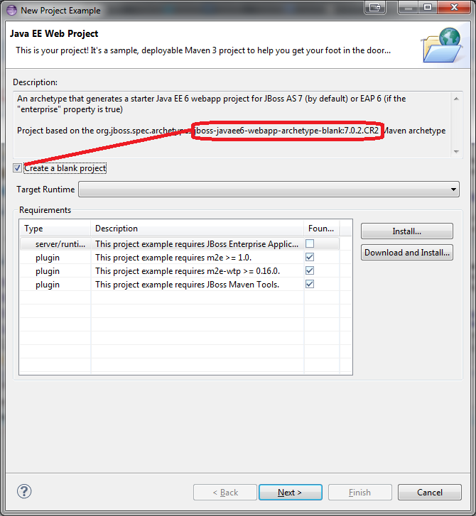
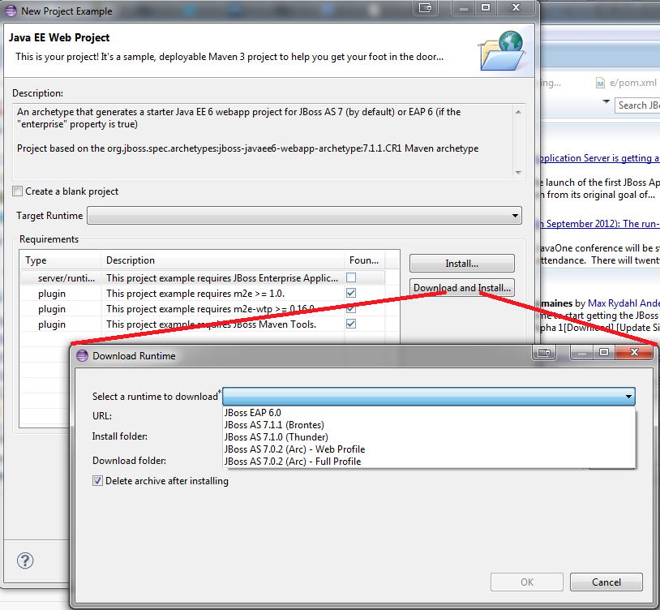

Project Examples |
|
| Revamped Wizard for Maven Archetypes |
For project examples based on Maven archetypes, we now rely on the JBoss Developer Framework Stacks descriptor to provide the most appropriate version of an archetype, depending on the target runtime you select. This also allows us to provide "blank" versions of archetypes, if you prefer to start creating project with no demo code. You can see what archetype version is used when checking "Create a blank project". This option is currently only available for the Java EE and Java EE Web projects, but we will be able to enable it for other project types in the near future. If the recommended runtime is not configured in your workspace, you now have the possibility of choosing the version you want to download related JIRAs : JBIDE-12472, JBIDE-12166, JBIDE-12254 |
|
|
|